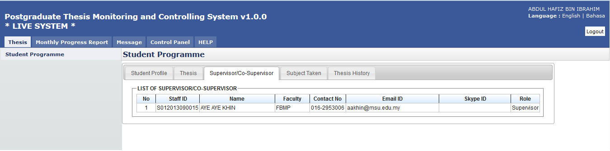

Supervisor or Co-Supervisor is the academic staff who has been assigned by Faculty to supervise the student in delivering the thesis and approved by the Senate.
There are conditions for the student to see the list of his/her supervisors. The conditions are:-
- Supervisor/Co-Supervisor has been assigned by Faculty and approved by the Senate
- Supervisor/Co-Supervisor has accepted the appointment to supervise the student.

Figure 6 List of Supervisor / Co-Supervisor
Steps:-
- Click on the Thesis tab on the Top panel
- Click on the Student Programme menu on the Left panel
- Click on the Supervisor/Co-Supervisor tab on the Working Area
- System will display the list of the supervisor/co-supervisor which has been assigned and approved by Senate.
Created with the Personal Edition of HelpNDoc: Write eBooks for the Kindle